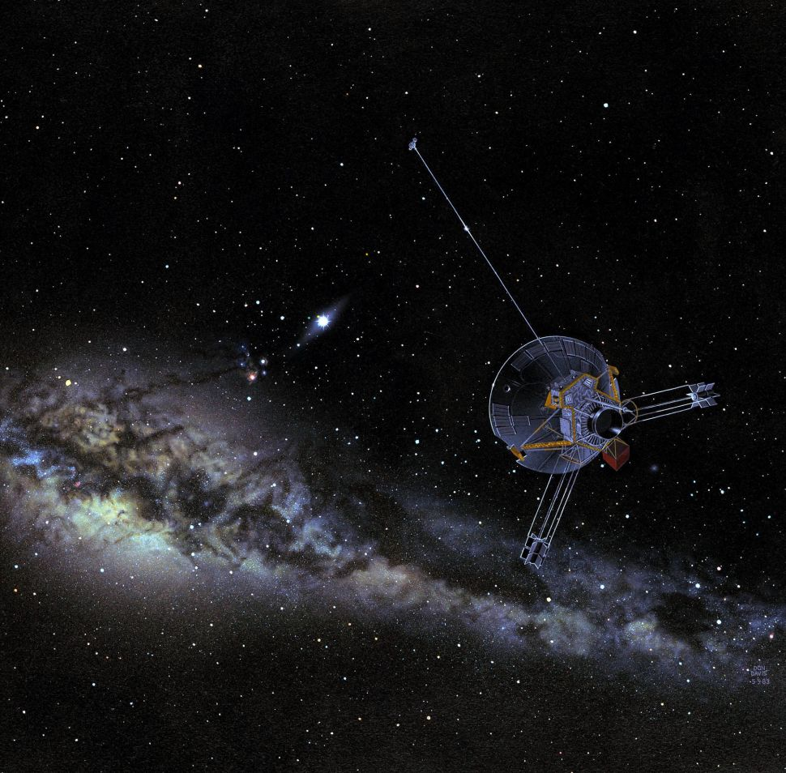
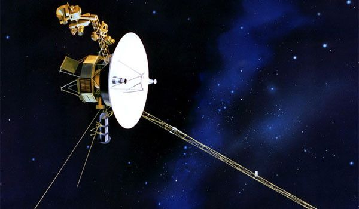
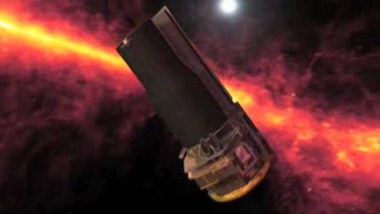

PIONEER

Pioneer 10 and Pioneer 11, launched in 1972 and 1973, respectively, were the first spacecraft to visit the solar system's most photogenic gas giants, Jupiter and Saturn. Pioneer 10 was the first probe to travel through the solar system's asteroid belt, a field of orbiting rocks between Mars and Jupiter. Then about a year-and-a-half after its launch, the spacecraft made the first flyby of the planet Jupiter.
VOYAGER

Shortly after the Pioneers made their flybys, the Voyager 1 and Voyager 2 probes followed. They made many important discoveries about Jupiter and Saturn, including rings around Jupiter and the presence of volcanism on Jupiter's moon, Io. Voyager went on to make the first flybys of Uranus, where it discovered 10 new moons, and Neptune, where it found that Neptune actually weighs less than astronomers thought.
SPITZER

Another spacecraft with a profound effect on cosmology and astrophysics is the Spitzer Space Telescope, which observed the heavens through infrared light. This light, which has a longer wavelength than visual light, is mostly blocked by Earth's atmosphere. In addition to taking gorgeous photos of galaxies, nebulae and stars, the telescope has made numerous groundbreaking scientific discoveries.